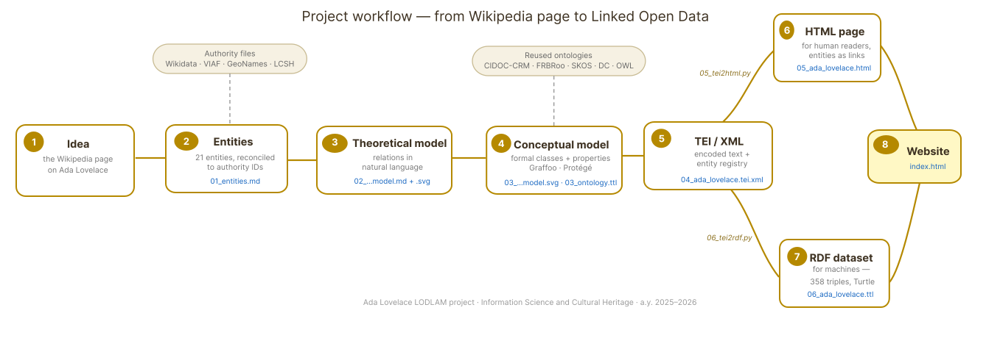
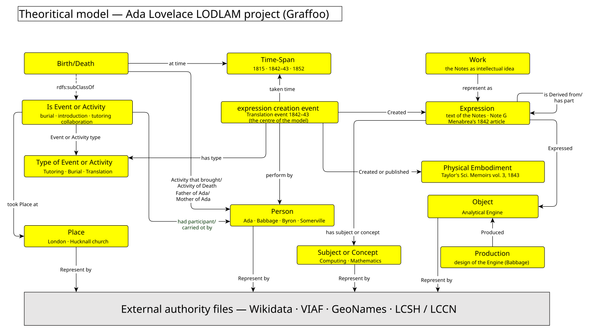
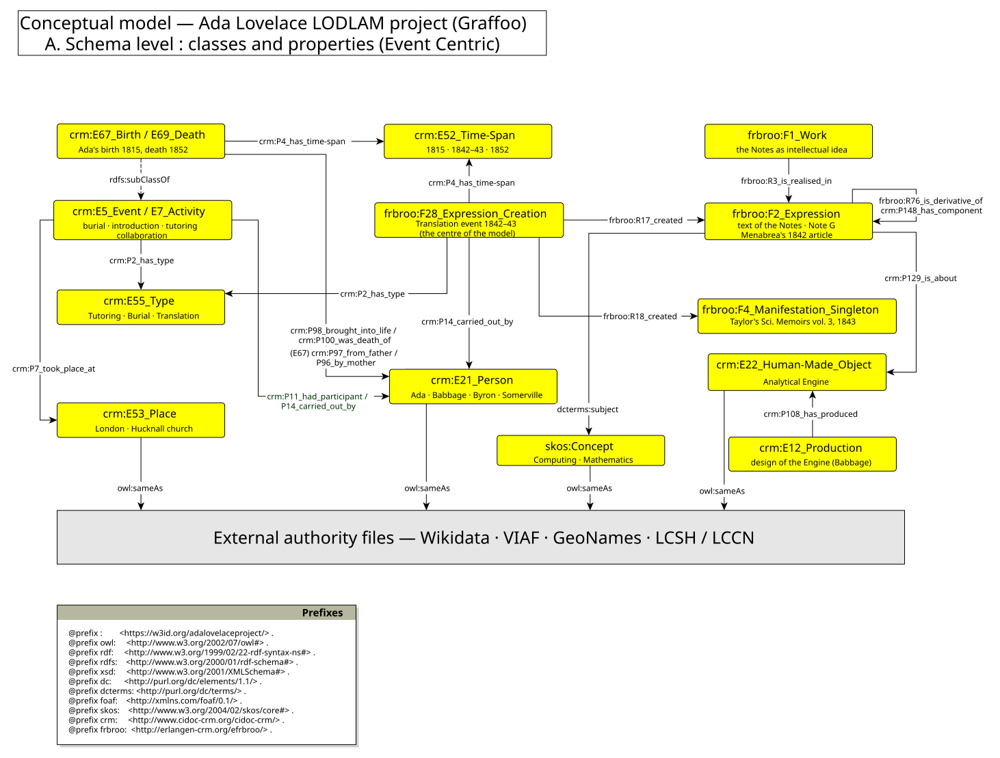
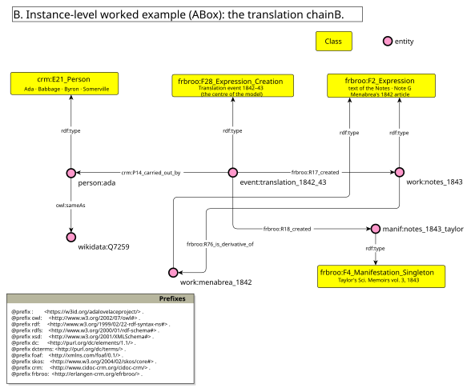
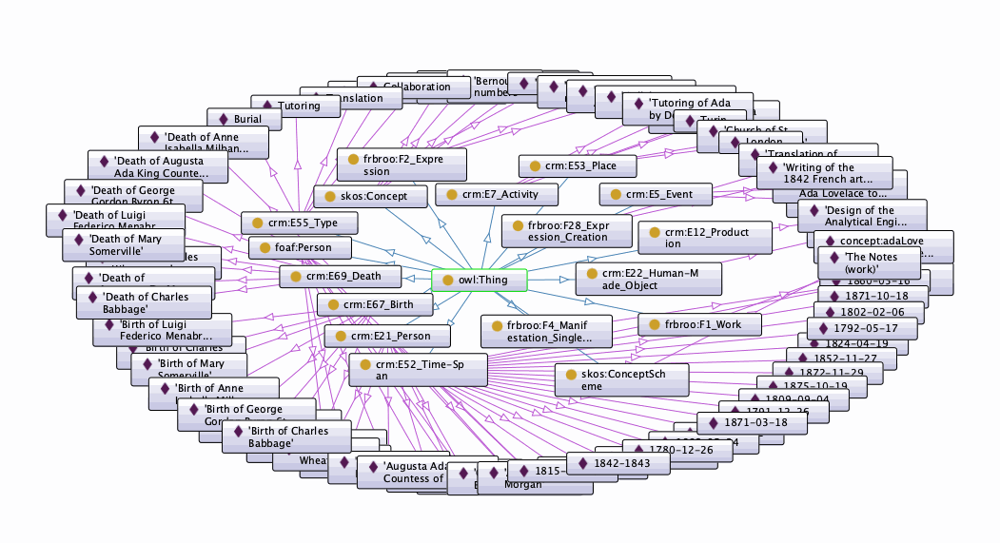
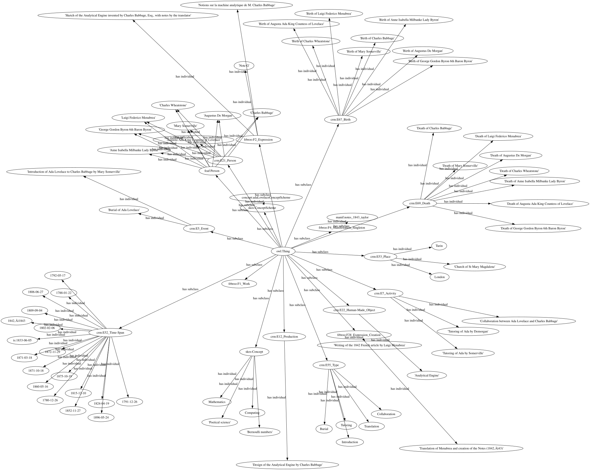

01About the project
Ada Lovelace (1815–1852) — mathematician, writer, and author of what is often called the first published computer program. This project takes the English Wikipedia article about her and turns it, step by step, into Linked Open Data: structured, machine-readable knowledge connected to the world's shared cultural-heritage vocabularies.

The modelling reuses CIDOC-CRM and FRBRoo (with SKOS, Dublin Core and OWL) — no new classes or properties were invented. Two Python scripts transform the single TEI source into a readable web page and a 358-triple RDF dataset.
02The entities
Twenty-one entities of six types were selected from the article. Every one is reconciled to external authority files — each badge below is a clickable, individually verified identifier.
The central figure
People
Places & organisation
Objects & works
Full catalogue: 01_entities.md
03The models
Theoretical model — in plain language
First, every relation was written as a simple sentence: Ada was tutored by Mary Somerville · the Notes translates Menabrea's article · the Notes contains Note G. Each sentence already has the subject–relation–object shape of a future RDF triple.

Conceptual model — formalized by reuse
Every sentence was then refactored into terms from existing ontologies
— nothing new was invented. CIDOC-CRM is the backbone
because it is event-centric: a birth is an event node linking
person, place and time. FRBRoo adds the bibliographic
layers — the Notes as idea (F1), text (F2) and 1843 printing
(F4) — and its R76_is_derivative_of expresses precisely
what a translation is. SKOS handles the subjects,
Dublin Core the simple metadata, and
owl:sameAs ties every local entity to Wikidata, VIAF,
GeoNames and LCSH — the link in Linked Open Data.


04The TEI encoding
Selected sections of the article are encoded in
TEI/XML. The principle: describe once, reference many times. The
header holds full entity lists — each entry with an
xml:id and its authority identifiers — and every mention
in the text points back with ref="#id". Quotations,
citations and machine-readable dates are annotated alongside the named
entities.
➡
Read the rendered text
— every entity is a clickable, colour-coded link to its authority
record, produced by
05_tei2html.py
(python3 05_tei2html.py).
05The RDF dataset
06_tei2rdf.py (Python + rdflib) reads the TEI and writes 358 triples of Turtle: harvested triples taken mechanically from the header (entities, alignments, dated birth/death events) plus modelled triples that realise the conceptual model's events. The heart of the graph:
event:translation_1842_1843
a frbroo:F28_Expression_Creation ;
crm:P14_carried_out_by person:ada ;
crm:P2_has_type type:Translation ;
frbroo:R17_created work:notes_1843 ;
frbroo:R18_created manif:notes_1843_taylor .
work:notes_1843
frbroo:R76_is_derivative_of work:menabrea_1842 ;
crm:P148_has_component work:note_g ;
crm:P129_is_about obj:analytical_engine .
person:ada owl:sameAs wikidata:Q7259 , viaf:61632881 .| Class | № | Class | № |
|---|---|---|---|
| crm:E52_Time-Span | 24 | frbroo:F2_Expression | 3 |
| crm:E21_Person | 11 | crm:E7_Activity | 3 |
| crm:E67_Birth / E69_Death | 11 + 11 | frbroo:F28_Expression_Creation | 2 |
| crm:E55_Type | 5 | crm:E5_Event | 2 |
| skos:Concept | 4 | crm:E74_Group · E12_Production | 1 + 1 |
| crm:E53_Place | 3 | frbroo:F1_Work · F4_Manifestation | 1 + 1 |
| crm:E22_Human-Made_Object | 3 | owl:ontology | 1 |


06All project files
- 01_entities.md — entity catalogue with verified authority IDs
- 02_theoretical_model.md · .svg — relations in natural language + mind map
- 03_conceptual_model.md · schema .svg · instance .svg · 03_ontology.ttl — mappings with reuse rationale, Graffoo diagrams, ontology file (validated in Protégé)
- 04_ada_lovelace.tei.xml — the TEI/XML encoding
- 05_tei2html.py · 05_ada_lovelace.html — XML → HTML transformation + output
- 06_tei2rdf.py · 06_ada_lovelace.ttl — TEI → RDF transformation + the 358-triple dataset
- graphviz.svg — RDF graph visualization
{kind=link}
{kind=link}
{kind=link}
{kind=link}